3ds Max - Integrated Submitter¶

Submission Options¶
The general Deadline options are explained in the Job Submission documentation, and the Draft/Integration options are explained in the Draft and Integration documentation.
Job Name text field and options button
Defines the name of the job; used to easily recognize its content and purpose.
When SMTD is opened, it will default to the name of the currently opened 3ds Max scene, or “Untitled 3ds Max Job” if the scene is Untitled.
The name can be freely edited before submission.
The name can be updated automatically if the name of the current 3ds Max scene changes due to a File > Save As…, File > Load, File > New or File > Reset operation. See Options tab > User Options > Automatically Update Job Name When Scene File Name Changes.
The name can be alternatively set to a mixture of tokens and custom text to build the Job Name at submission time, for example “My $scene Job” or “3ds Max Rendering $outputfilename” will replace the $ tokens with the 3ds Max scene name, and the output filename, respectively.
Press the options button to the right of the text field to quickly access the available tokens.
Comment text field and options button
Defines the content of the comment property of the job.
The Comment property does not affect the processing of the job, but can be very useful to communicate additional information about the job to all users.
For example, the Comment could contain additional info about the job’s purpose, its content, expected/possible issues, etc.
The default value is the token $default, which will be replaced with a text generated internally by SMTD.
Examples of $default Comments are:
“3ds Max 2017 Scene Submission” - from a regular submission
“State Set: State01” - from a State Set submission
The options button to the right of the text field offers a menu with several options:
CLEAR Comment - clears the content of the Command text field.
RESET to $default - resets the Comment text field to the $default token.
+$token - a number of useful tokens defined in the Repository file “SubmitMaxToDeadline_CommentFormats.ini” located under the
\Submission\3dsMax\Main\folder.
Note that selecting any of the +$token items will ADD the token to the current comment and will not replace (hence the + in front of them).
This lets you quickly build a sophisticated comment like “$default $scene $date $camera” with just a few clicks.
If you want to replace the Comment with a token, first use the CLEAR Comment option , then the +$token item from the menu.
User Name text field
Provides the name of the Deadline user submitting and thus owning the job.
The name will be set automatically to the login name of the current system user.
However, you can type in any user name that does or does not exist in the Deadline repository to submit a Job as somebody else.
This setting is permanently non-sticky - restarting SMTD will always reset the field to the logged user’s name.
Department text field
The Department text field has no effect on the processing of the job, but can be useful for sorting and filtering purposes.
It is sticky by default, so you can enter it once and leave it for all future SMTD sessions until you change departments.
Its default value is empty string “”.
Pool drop-down list
Contains a list of all Pools defined in the current Repository, plus the value “none” on top of the list.
The list of available Pools is updated each time SMTD is launched.
When a specific named Pool is selected from the list, only Workers that are explicitly added to that Pool will be eligible to dequeue the Job.
When the “none” option is selected, any Worker will be eligible to dequeue the Job regardless of its Pools assignments.
Secondary drop-down list
Contains a same list of all Pools plus “none” as the Pool drop-down list, plus the value “” (empty string) on top of the list.
The Secondary Pool is used when no Workers from the Pool list were available to process the job.
When a specific named Pool is selected from the list, Workers that are explicitly added to that Pool will be eligible to dequeue the Job.
When the “none” option is selected, any Worker will be eligible to dequeue the Job regardless of its Pools assignments.
When the “” option is selected, the Secondary Pool option will not ignored and will not be used.
Group drop-down list
Contains the list of all Groups defined in the current Repository, plus the value “none” on top of the list.
Groups are used as binary yes/no filters to determine which Workers are eligible to dequeue a Job.
When set to a specific Group name, only Workers assigned to that Group will be considered for processing the Job.
When set to “none”, all Workers will be considered.
Priority slider and value spinner
Defines the numeric Priority value of the job.
The value range depends on the current Repository settings.
The default Maximum Priority value is 100, but it can be modified via the Deadline Monitor in Power User Mode under Configure Repository Options > Job Settings section > Job Scheduling tab > Submission Limitations group > Maximum Job Priority.
Lower Controls Section¶
LOAD PRESET drop-down list and button
These controls can be used as a shortcut to quickly load an SMTD preset from disk without going through the complete Load Preset comparison dialog.
Simply select a previously saved Preset name from the list, and press the button to restore all its settings to the current UI.
Run Sanity Check Automatically Before Submission checkbox
When checked, SMTD will perform a Sanity Check before submitting the job.
The Sanity Check is implemented as a separate set of scripted functions which can be enhanced by 3rd parties to meet specific studio needs.
For more information, please refer to the Sanity Check section.
Run Sanity Check Now! button
Pressing this button performs a Sanity Check without submitting a Job.
Any potential problems will be reported and can be fixed before actually submitting the job.
Render Dialog… button
Opens the 3ds Max Render Setup dialog.
Monitor… button
Launches the Deadline Monitor application.
Pipeline Tools… button
Opens the Pipeline Tools dialog which offers 3ds Max integration with Draft, Shotgun, ftack etc.
SUBMIT checkbutton
Pressing this checkbutton performs the actual submission of the 3ds Max scene to Deadline.
Pressing the checkbutton again while the submission is running will cancel it prematurely.
Last Submission status indicator
The status indicator represents the progress of the current submission process, and the result of the last submission:
Blue - no submission has been performed yet
Green - last submission was successful.
Red - last submission failed.
Yellow - the process is still running.
SMTD Log¶
Log: ALL button
Left or right click opens a context menu with the following options:
Show ALL Messages - resets the filter to show all log lines regardless of type.
Show Only INFO, >PROGRESS and +SUCCESS Messages - shows only info (no prefix), progress and success messages, hides errors and warnings.
Show Only INFO Messages - shows only info (no prefix) messages, hides all othersother messages.
Show Only >PROGRESS Messages - shows only progress messages, hides all other messages.
Show Only +SUCCESS Messages - shows only success messages, hides all other messages.
Show Only –ERROR and !!WARNING Messages - shows both errors and warnings, hides all other messages.
Show Only –ERROR Messages - - shows only error messages, hides all other messages.
Copy Selected Lines To Windows CLIPBOARD - copies the highlighted lines to the clipboard. Use Click, CTRL+Click, SHIFT+Click to select.
TIMESTAMP display in the Log Window - a toggle to turn on and off the display of the timestamp in front of the message. Turning it off allows longer lines to be shown.
OPEN the Current Log in the Default Editor for .LOG files… - tries to open the current log file in whatever editor has been associated with the .LOG file extension, or opens the Windows dialog to pick an appropriate editor.
OPEN the Current Log in Windows NOTEPAD… - opens the current log file in Notepad.
EXPLORE the SMTD Logs folder… - Reveals the location of the Log files folder in a Windows Explorer.
CLEAR Log Window - Changing Filters will restore - Clears the Log Windows’s display without clearing the internal history of the current session. Any changes to filters will restore the content.
RESET Log History - Only Log File will persist - Clears the Log’s internal history. Any previous messages will be retained in the log file on disk, but cannot be restored in the session’s Log Window.
The same menu is also accessible through a right-click in the Log Window itself.
Log Filter text field
Performs a case-insensitive sub-string search and displays only the lines containing the specified token.
The Timestamp will not be included in the search.
Implicit * wildcards will be added before and after the filter token to facilitate the sub-string search.
Explicit ? wildcard can be used to match a single character.
Explicit * wildcard can be used to match any number of characters.
When set to no text, all lines allowed by the message type filter will be displayed.
Log Window listView
Displays the current session’s Log messages.
Messages are color-coded based on their type, and prefixed with a character representing the type (see the Menu above).
Double-clicking any Log Window message line will toggle the filter for that message type on.
Double-clicking any message line again will toggle all filters off to display all messages of all types.
Right-clicking on any message will open the context menu (see above).
Job Tab¶
Job Submission rollout¶
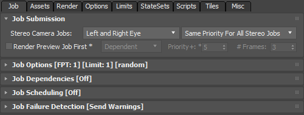This rollout was added in Deadline 10. It hosts previously available controls related to the creation of multiple jobs from a single submission, including Stereo Cameras, and Preview Job submission.
Stereo Camera Jobs drop-down list
Controls what Jobs to submit when the Viewport is set to a component of a Stereo Camera rig:
LEFT/RIGHT/CENTER Camera Only - submits only the respective eye regardless of which of the 3 Cameras is active.
LEFT and RIGHT Cameras - submits both eyes regardless of which of the 3 Cameras is active.
LEFT, RIGHT and CENTER - submits all 3 Cameras regardless of which of them is active.
If the Viewport is not set to a Stereo Camera component, the current view will be submitted regardless of this mode.
Stereo Camera Job Priorities drop-down list
Modifies the Job Priorities of Stereo Camera jobs, allowing one eye to be processed with higher priority than the others.
The first Camera listed will be submitted with unmodified Priority.
The second Camera listed will have (Priority-1).
The third Camera listed will have (Priority-2).
Render Preview Job First checkbox
When checked, two jobs will be submitted.
The first job will have [PREVIEW FRAMES] added to its name, have a priority equal to the main job priority setting combined with the value of the Priority+ setting (see next setting), and will render only N frames based on the #Frames value.
The second job will have [REST OF FRAMES] added to its name, can be dependent on the first job to start rendering once the preview frames job has finished, and/or can be suspended to require manual approval by the user. It will have the Priority specified by the Priority slider, and will render all frames not included in the preview job.
Dependent/Suspended drop-down list
Controls the dependency and suspended state of the [REST OF FRAMES] Job.
Possible values are:
Default - the [PREVIEW FRAMES] and [REST OF FRAMES] Jobs will have the same dependencies (none, or custom) set up in the Job Dependencies rollout.
Dependent - the [REST OF FRAMES] Job will be made dependent on the [PREVIEW FRAMES] Job.
Suspended - the [REST OF FRAMES] Job will be submitted in Suspended state, allowing the user to look at the Preview frames before manually resuming the rest of the rendering if everything looks good.
Depend and Susp. - the [REST OF FRAMES] Job will be made both dependent on the [PREVIEW FRAMES] Job, and will be submitted in Suspended state.
Priority+ value spinner
Defines the Priority Increase for the [PREVIEW FRAMES] job.
For example, if the Priority slider is set to 50 and the Priority+ value is 5, the [PREVIEW FRAMES] Job will be submitted with Priority of 55, and the [REST OF FRAMES] Job with 50.
#Frames value spinner
Defines the number of frames to be submitted as a [PREVIEW FRAMES] job.
The frames will be taken at equal intervals, for example a value of 2 will send the first and last frames, a value of 3 will send the first, middle and last frames, and so on.
Job Options rollout¶
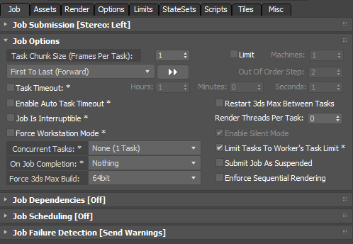Task Chunk Size (Frames Per Task) value spinner
Defines the number of Frames to be processed at once in a single Task by a Worker.
By default, the value is set to 1 and maps one Frame to one Task.
It is advisable to increase this value when
The individual Frames take a very short time - this way, 3ds Max can process multiple Frames in a row without the need from the Worker to communicate with the Repository and make scheduling decisions.
The total number of Frames is higher than the Maximum Task number specified in the Repository settings (default limit is 5000). For example, rendering 10000 frames with a limit of 5000 would be possible without changing the Repository settings if the Task Chunk Size is set to 2.
The main drawback of increasing this value is that should any of the Frames in the Task fail for any reason, the whole Task including any previous Frames included in it will be re-processed.
Limit Number of Machines Rendering Concurrently checkbox
When checked, only the number of Workers specified by the [Machines] value (see below) will be allowed to dequeue the Job.
When unchecked, any number of Workers can work on the Job, up to the number of Tasks in the Job.
Machines value spinner
Defines the number of Workers that will be allowed to dequeue the Job at the same time.
The control will be disabled when the Limit Number of Machines Rendering Concurrently checkbox is unchecked.
Out-Of-Order Rendering drop-down list
In the default Fist To Last (Forward) mode, all frames are submitted sequentially.
Some of the other options can be very useful when rendering long test animations.
For example, you can render a rough animation containing every Nth frame early enough to detect any major issues before all frames have been rendered, or in cases where the major action happens in the end of the sequence, reverse the rendering order.
Possible values are (examples based on 10 frames range from 0 to 10 and Every Nth Step of 5):
Mode |
Description |
Frame Sequence Step 2 |
Frame Sequence Step 3 |
Frame Sequence Step 5 |
Frame Sequence Step 6 |
|---|---|---|---|---|---|
First To Last (Forward) |
Submits all frames in ascending sequential order. |
0,1,2,3,4,5,6,7,8,9,10 |
same, step not used |
same, step not used |
same, step not used |
Every Nth, Then Forward |
Uses the Out Of Order Step value to process every Nth Frame, then renders the rest in ascending sequential order. |
0,2,4,6,8,10,1,3,5,7,9 |
0,3,6,9,1,2,4,5,7,8,10 |
0,5,10,1,2,3,4,6,7,8,9 |
0,6,1,2,3,4,5,7,8,8,10 |
Every Nth, Block Fill |
Creates N blocks based on the Out Of Order Step value, then fills all blocks sequentially in ascending order. |
|
0,3,6,1,4,7,2,5,8,9,10 three frames/block, +1 |
|
|
Every Nth, Half Raster Refine |
Every Nth frame using the Out Of Order Step value, then renders the frame in the middle of rach remaining segments. |
0,2,4,6,8,10,1,3,5,7,9 |
0,3,6,9,1,2,4,5,7,8,10 |
0,5,10,2,4,6,8,1,3,7,9 |
0,6,3,9,1,2,4,5,7,8,10 |
Last To First (Reverse) |
Submits all frames in descending sequential order. |
10,9,8,7,6,5,4,3,2,1,0 |
same, step not used |
same, step not used |
same, step not used |
First And Last Frames First |
Submits the two edge frames, then all frames between them. |
0,10,1,2,3,4,5,6,7,8,9 |
same, step not used |
same, step not used |
same, step not used |
From Both Ends |
Interlaced Forward abd Reverse sequences |
0,10,1,9,2,8,3,7,4,6,5 |
same, step not used |
same, step not used |
same, step not used |
From Center |
Renders frames from the middle towards the start and end frames |
4,6,3,7,2,8,1,9,0,10,5 |
same, step not used |
same, step not used |
same, step not used |
From Both Ends And From Center |
Combines the previous two modes |
0,10,4,5,1,9,3,6,2,7,8 |
same, step not used |
same, step not used |
same, step not used |
Random |
Fully random order (no seed used) - Some possible examples shown: |
3,6,1,8,10,2,5,7,4,0,9 |
10,2,0,1,8,5,7,3,9,6,4 |
3,7,1,5,0,9,10,2,8,6,4 |
7,2,3,9,5,4,8,0,6,10,1 |
|>|> Copy Sequence button
Opens a context menu with two options:
Copy the Frame Sequence to the Windows CLIPBOARD - this can be useful for pasting into the Monitor > Job’s Frame Range dialog’s field.
Print the Frame Sequence to the LOG Windo/File - this can be useful to preview to actual frame range before submitting, or to include the frames list in the Log for future reference.
Out Of Order Step value spinner
Enabled when one of the Nth frame based rendering orders is selected in the Out-Of-Order Rendering drop-down list
This value defines the Nth step to use.
Note that Preview Jobs respect this setting too!
Task Timeout checkbox and value spinners
When checked, a Task will be requeued if it runs longer than the time specified by the Hours, Minutes and Seconds value spinners.
This is useful to prevent stalling when the typical rendering time of the job is known from previous submissions.
Enable Auto Task Timeout checkbox
When checked, the Task will be requeued if it runs much longer than the Tasks that have already finished for this Job.
It should only be used if the Tasks are expected to have more or less consistent times.
Restart 3ds Max Between Tasks checkbox
When unchecked (default), 3ds Max will be kept in memory for the duration of the give job’s processing. This can reduce render time significantly as multiple Tasks can be rendered in sequence without reloading 3ds Max.
When checked, 3ds Max will be restarted between tasks, thus releasing all memory and resetting the scene settings at cost of startup time.
Render Threads Per Task value spinner
Forces each task of the job to use the specific number of CPU’s/Threads (0=unlimited)
This can be useful when doing single threaded renders and the Concurrent Tasks setting is greater than 1.
Job Is Interruptible checkbox
When checked, the Worker can cancel the Job’s Task before finishing it if a higher priority Job is submitted to the Queue and the Worker is eligible to process it.
When unchecked, once a Task has been
Force Workstation Mode checkbox
When unchecked, 3ds Max will be started in Worker mode without the User Interface, which does not require a 3ds Max license.
When checked, 3ds Max will be launched in full Interactive mode and will require a license.
Used mainly for testing and debugging purposes and should be left unchecked.
Enable Silent Mode checkbox
This option is only available when Force Workstation Mode is checked.
This is a SDK function we execute which can help suppress some popups that 3ds Max displays (although some non-native popups like to ignore this setting such as VRay). However, we also explicitly support the VRay Silent Mode setting in this case. For further automatic handling via our Deadline Plugin API, please see our sections on Stdout Handling and Popup Ignorers / Handlers in our Scripting API documentation.
Concurrent Tasks drop-down list
Defines the number of Tasks a single Worker can pick up at once (by launching multiple instances of 3ds Max on the same machine).
This is useful to maximize performance when the tasks don’t saturate all CPUs at 100% and don’t use up all available memory.
Typically, as a rule of thumb, this feature is NOT required for rendering as 3ds Max uses 100% of CPU’s during rendering, but can be useful for running single-threaded tasks like particle or geometry caching, MAXScript jobs etc.
Limit Tasks To Worker’s Task Limit checkbox
When checked, the number of Concurrent Tasks will be limited by the Worker’s Task Limit which is typically set to the number of available CPUs.
For example, if ‘Concurrent Tasks’ is set to 16 but a Worker has 8 cores, only 8 concurrent tasks will be processed.
On Job Completion drop-down list
Defines the action to perform when the Job has completed successfully.
Possible values are:
Nothing - the Job is left in the Queue in Completed state, and can be manually modified, requeued, deleted etc. .
Archive - the Job is archived and removed from the Queue, but can be de-archived at any time using the File > Import Archived Jobs… menu option.
Delete - the Job will be automatically deleted from the Repository and cannot be restored.
Submit Job As Suspended checkbox
When checked, the Job will be submitted to the Repository in Suspended initial state and it will require manual user intervention before becoming Active.
When unchecked, the Job will become Active and can be dequeued by Workers immediately after a successful submission.
Force 3ds Max Build drop-down list
Allows you to specify which build of 3ds Max (32 bit vs. 64 bit) to launch when processing the Job.
The value will be set automatically based on the version of 3ds Max running SMTD.
However, it can be overridden to force a different build of 3ds Max, for example a 32 bit version of 3ds Max could force a Job to render on 64 bit versions of 3ds Max on the network.
Possible values are:
None - the Worker will launch the first build of the required 3ds Max version it finds, regardless of its bitness.
32bit - the Worker will launch the first 32 bit build of 3ds Max it finds in the specified paths. It will ignore 64 bit builds.
64bit - the Worker will launch the first 64 bit build of 3ds Max it finds in the specified paths. It will ignore 32 bit builds.
Note that the actual version of 3ds Max (e.g. 2016, 2017, 2018 etc.) performing the submission will determine the version of 3ds Max to render the scene - this control affects only the 32/64 bit flavour selection.
Enforce Sequential Rendering checkbox
When checked, the Tasks will be processed in ascending order in order to reduce the performance hit from History-Dependent calculations, for example from particle systems.
When unchecked, Tasks can be picked up by Workers in any order.
Submit Visible Objects Only checkbox
This option should be used at your own risk, as it is heavily dependent on the content of your scene.
In most cases, it can be used to submit only a subset of the current scene to Deadline, skipping all hidden objects that would not render anyway.
This feature will be automatically disabled if the current scene contains any Scene XRefs.
The feature will create an incorrect file if any of the scene objects depend INDIRECTLY on hidden objects.
Job Dependencies rollout¶
When the checkbox is checked and one or more jobs have been selected from the multi-list box, the job will be set to Pending state and will start rendering when all jobs it depends on have finished rendering. Use the Get Jobs List button to populate the Job List and the Filter options with job data from the Repository.
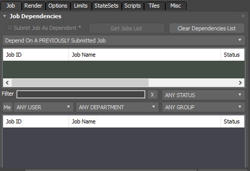RPM Pass Dependencies - Global Setup rollout¶
This option is ONLY available when submitting jobs from RPManager. If enabled, all passes that are submitted will be dependent on the passes selected in this rollout.
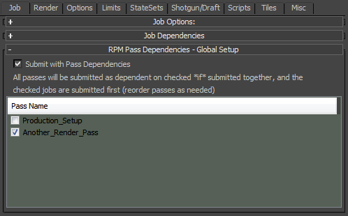Job Scheduling rollout¶
Enable job scheduling. See the Scheduling section of the Modifying Job Properties documentation for more information on the available options.
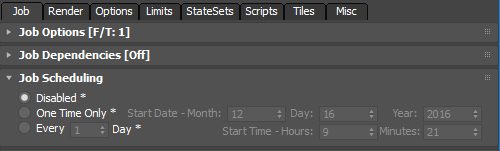Job Failure Detection rollout¶
Override the job failure detection settings. See the Scheduling section of the Modifying Job Properties documentation for more information on the available options.
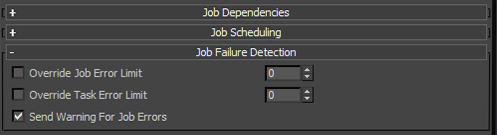Assets Tab¶
This tab was introduced in Deadline 10.
Scene And Asset Files rollout¶
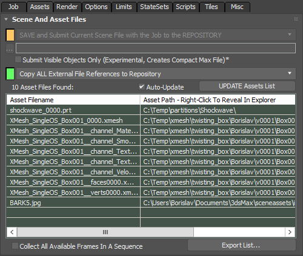Scene File Submission Options drop-down list
SAVE and Submit Current Scene File with the Job to the REPOSITORY - The current scene will be saved to a temporary file which will be sent with the job and will be stored in the Job’s folder in the Repository.
SAVE And Use Current Scene’s ORIGINAL NETWORK PATH - The current scene will be saved to the original file it was opened from, and that file will be referenced by the job.
SAVE and Submit Current Scene File to GLOBAL NETWORK PATH - The current scene will be saved to a temporary file which will be copied to a Globally-Defined Alternative Network Location (e.g. dedicated file server). It is specified in
[Repository]\submission\3dsmax\Main\SubmitMaxToDeadline_Defaults.iniunder [UserOptions] as the SubmitSceneGlobalBasePath key. It will be referenced by the Job via its path only. This will reduce the load on the Repository server.SAVE and Submit Current Scene File to USER-DEFINED NETWORK PATH - The current scene will be saved to a temporary file which will be copied to a User-Defined Alternative Network Location (e.g. dedicated file server) stored as a local setting. It will be referenced by the Job via its path only. This will reduce the load on the Repository server.
DO NOT SAVE And Use Current Scene’s ORIGINAL NETWORK PATH - The current scene will NOT be saved, but the original file it was opened from will be referenced by the job. Assuming the file resides on a dedicated file server, this will speed up submission and rendering significantly, but current changes to the scene objects will be ignored.
Submit External Files With Scene drop-down list
Controls whether the external files (bitmaps, xrefs etc.) will be submitted with the scene or not.
Render Tab¶
Scene Tweaks rollout¶
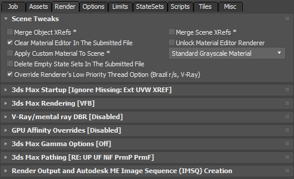Merge Object XRefs checkbox
If object XRefs will be merged during submission.
Merge Scene XRefs checkbox
If scene XRefs will be merged during submission.
Clear Material Editor In The Submitted File checkbox
Clears the material editor in the submitted file during submission.
Unlock Material Editor Renderer checkbox
If checked, the Material Editor’s Renderer will be unlocked to use the Default Scanline Renderer to avoid problems with some old versions of V-Ray.
Apply Custom Material To Scene checkbox
If checked, all geometry objects in the scene will be assigned one of the user-defined materials available in the drop down box.
Delete Empty State Sets In The Submitted File checkbox
Deletes any empty State Sets in the submitted file during submission and the State Sets dialog/UI will be reset.
This fixes an ADSK bug when running 3dsMax as a service.
Override Renderer’s Low Priority Thread Option (Brazil r/s, V-Ray) checkbox
When checked, the Low Priority Thread option of the renderers supporting this feature will be forced to false during the submission.
Both Brazil r/s and V-Ray provide the feature to launch the renderer in a low priority thread mode.
This is useful when working with multiple applications on a workstation and the rendering should continue in the background without eating all CPU resources.
When submitting a job though, this should be generally disabled since we want all Workers to work at 100% CPU load.
3ds Max Startup rollout¶
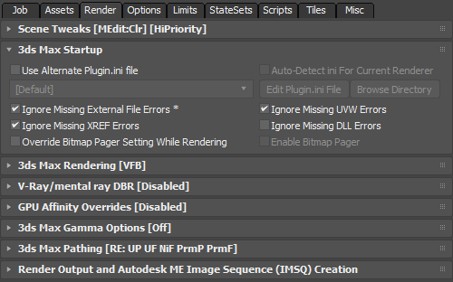Use Alternate Plugin.ini file checkbox
By default, 3ds Max will launch using the default plugin.ini file in the local installation.
You can use this option to select an alternative plugin.ini file to use instead.
Alternative plugin.ini files can be added to
[Repository]\plugins\3dsmax, and then they will appear in the drop down box in the submitter (see the Custom Plugin.ini File Creation section for more information). If you have the [Default] option selected, it’s the equivalent to having this feature disabled.
Ignore Missing External File Errors checkbox
Missing external files could mean that the 3ds Max scene will render incorrectly (with textures missing etc).
In some cases though, missing external files could be ignored - for example if the job is meant for test rendering only.
If you want the job to fail if a missing external resource is detected, uncheck this checkbox.
Ignore Missing UVW Errors checkbox
Missing UVWs could mean that some 3ds Max object would render incorrectly (with wrong texture mapping etc).
In some cases though, missing UVWs could be ignored (for example if the job is meant for test rendering).
Ignore Missing XREF Errors checkbox
Missing XFEFs could mean that the 3ds Max scene cannot be loaded correctly.
In some cases though, missing XFEFs could be ignored.
If you want the job to fail if a missing XFEF message is detected at startup, keep this checkbox unchecked.
Ignore Missing DLL Errors checkbox
Missing DLLs could mean that the 3ds Max scene cannot be loaded or rendered correctly.
In some cases though, missing DLLs could be ignored.
If you want the job to fail if a missing DLL message is detected at startup, keep this checkbox unchecked.
Override Bitmap Pager Setting While Rendering checkbox
When this option is unchecked, the 3ds Max Bitmap Pager will use the current settings on the specific computer.
When checked, you can force the 3ds Max Bitmap Pager setting to be enabled or disabled using the Enable Bitmap Pager checkbox.
3ds Max Rendering rollout¶
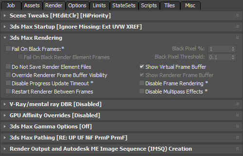Fail On Black Frames checkbox
This option can be used to fail the render if a certain portion of the output image or its render elements is black.
The Black Pixel % defines the minimum percentage of the image’s pixels that must be black in order for the image to be considered black. If each of RGB are all less than or equal to the Threshold, and the alpha is not between the Threshold and (1.0 - threshold), then the pixel is considered black.
If the Threshold is greater than or equal to 0.5, then the alpha value has no effect.
Do Not Save Render Element Files checkbox
Enable this option to have Deadline skip the saving of Render Element image files during rendering (the elements themselves are still rendered).
Show Virtual Frame Buffer checkbox
If checked, the 3ds Max frame buffer will be displayed on the Worker during rendering.
Override Renderer Frame Buffer Visibility checkbox
If checked, the current renderers frame buffer visibility will be overridden by the next setting (Show Renderer Frame Buffer).
Show Renderer Frame Buffer checkbox
If checked, the current renderers frame buffer will be made visible during rendering (V-Ray and Corona Frame Buffers currently supported).
Disable Progress Update Timeout checkbox
Enable this option to disable progress update checking.
This is useful for renders like Fume FX sims that don’t constantly supply progress to 3dsmax.
Disable Frame Rendering checkbox
Enable this option to skip the rendering process.
This is useful for renders like Fume FX sims that don’t actually require any rendering.
Restart Renderer Between Frames checkbox
When checked, Deadline will restart the renderer after each frame to avoid some potential problems with specific renderers.
The C++ Lightning plugin (unique to Deadline) will unload the renderer plugin and then reload it instantly.
This has the effect of forcing a memory purge and helps to improve renderer stability, as well as ensure the lowest possible memory footprint.
This can be helpful when rendering close to the physical memory limit of a machine.
Enabling this option has little to no impact on the actual render times.
This feature should be ENABLED to resolve V-Ray renders where typically the beauty pass renders correctly but the Render Element’s are all black or perhaps seem to be swapped around.
Ensure this feature is DISABLED if you are sending FG/LC/IM caching map type jobs to the farm, as the renderer will get reset for each frame and the FG/LC/IM file(s) won’t get incrementally increased with the additional data per frame.
This option should be DISABLED for FumeFX simulation jobs as well.
Disable Multipass Effects checkbox
Enable this option to skip over multipass effects if they are enabled for the camera to be rendered.
V-Ray/Mental Ray/Corona DBR Options rollout¶
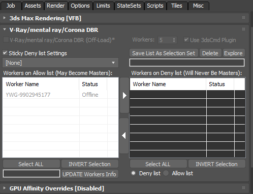V-Ray/Mental Ray/Corona DBR (off-load) checkbox
Enable this option to offload a V-Ray or Mental Ray DBR render to Deadline. (Ensure the applicable renderer is selected first).
Workers value spinner
Number of V-Ray Spawners/Corona Dr Servers via Deadline Worker to run (including the MASTER Worker).
Use 3dsCmd Plugin checkbox
To save on using a 3dsMax workstation (GUI) license for the MASTER Worker, submit this job to the 3dsCmd plugin (NOT required for Corona).
Allow list/Deny list Worker(s) for Master list views
Control which Worker(s) pickup the first TASK in the DBR job and essentially, always become the MASTER machine.
Off-load DBR¶
You can offload a V-Ray, Corona or Mental Ray DBR job to Deadline by enabling the Distributed Rendering option in your V-Ray, Corona or Mental Ray settings, and by enabling the V-Ray/Mental Ray/Corona DBR checkbox in the submission dialog. With this option enabled, a job will be submitted with its task count equal to the number of Workers you specify, and it will render the current frame in the scene file.
The Worker that picks up task 0 will be the “master”, and will wait until all other tasks are picked up by other Workers (unless Dynamic Start has been enabled in plugin config). Once the other tasks have been picked up, the “master” will update its local V-Ray, Corona or Mental Ray config file with the names of the machines that are rendering the other tasks. It will then start the distributed render by connecting to the other machines.
If you wish for your DBR jobs to start rendering immediately after task 0 is picked up by the master Worker, then Dynamic Start for V-Ray or Auto-start local Worker for V-Ray RT needs to be enabled in the Plugin Configuration of the 3dsmax or 3dsCmd plugin depending on which render plugin you are submitting your off-load DBR jobs to.
It is recommended to setup V-Ray DBR, Corona DR or Mental Ray DBR for 3ds Max and verify it is working correctly prior to submitting a DBR off-load job to Deadline. RTT (Render To Texture) is not supported with distributed bucket rendering. If running multiple Deadline Workers on one machine, having these 2 or more Workers both pick up a different DBR job concurrently as either master or Worker is not supported.
Many of the common V-Ray/Mental Ray/Corona DR settings have been exposed in the Plugin Configuration in 3dsCmd or 3dsMax.
Notes for V-Ray DBR:

Deadline 9.0 introduced support to dynamically add or remove Deadline Workers (V-Ray Spawner nodes) to the currently processing DBR render once started on the “master” Worker (min V-Ray v3.2 SP2 required). Ensure Dynamic Start is enabled in Plugin Configuration in 3dsCmd or 3dsMax. To add/remove machines, right-click on your DBR off-load job in Deadline Monitor -> Scripts -> DynamicDBR(.py).
Deadline’s 3dsCmd plugin does NOT consume a 3ds Max workstation license compared to using Deadline’s 3dsMax plugin. If using SMTD, then you MUST have the Force Workstation Mode option enabled in the submission dialog (under the Render tab). This means that the “master” will use up a 3ds Max workstation license. If you don’t want to use a 3ds Max license, you can submit to the 3ds Command plugin instead by either enabling the Use 3dsCmd Plugin checkbox or by submitting using the 3dsCmd in-app submitter.
Ensure V-Ray is the currently assigned renderer in the 3ds Max scene file prior to submission.
You must have the Distributed Rendering option enabled in your V-Ray settings under the Settings tab.
The Workers will launch the V-Ray Spawner executable found in the 3ds Max root directory. Do NOT install the V-Ray Spawner as a service on the master or Worker machines.
The vray_dr.cfg / vrayrt_dr.cfg file in the 3ds Max’s plugcfg directory must be writeable so that the “master” machine can update it. This is typically located in the user profile directory, in which case it will be writeable already.
Chaos Group recommend that each machine to be used for DBR has previously rendered at least one other 3ds Max job prior to trying DBR on the same machine.
Ensure all Workers can correctly access any mapped drives or resolve all UNC paths to obtain any assets required by the 3ds Max scene file to render successfully. Use the Deadline Mapped Drives feature to ensure the necessary drive mappings are in place.
Default lights are not supported by Chaos Group in DBR mode and will not render.
Ensure you have sufficient V-Ray DR licenses if processing multiple V-Ray DBR jobs through Deadline concurrently. Use the Deadline Limits feature to limit the number of licenses being used at any time.
Ensure the necessary V-Ray executables & TCP/UDP ports have been allowed to pass-through the Windows Firewall. Please consult the V-Ray user manual or V-Ray Spawner Port Configuration documentation for more information.
Notes for Mental Ray DBR:
Ensure Mental Ray is the currently assigned renderer in the 3ds Max scene file prior to submission.
You must have the Distributed Render option enabled in your Mental Ray settings under the Processing tab.
The Mental Ray Satellite service must be running on your Worker machines. It is installed by default during the 3ds Max 2014 or earlier installation. Note that ADSK changed this default from 3dsMax 2015 onwards and the Mental Ray Satellite Service is installed as part of the install process but is NOT automatically started, so you will need to start it manually the very first time. See this AREA blog post about Distributed Bucket Rendering in 3ds Max 2015.
Ensure the “Use Placeholder Objects” checkbox is enabled in the “Translator Options” rollout of the “Processing” tab. When placeholder objects are enabled, geometry is sent to the renderer only on demand.
Ensure “Bucket Order” is set to “Hilbert” in the “Options” section of the “Sampling Quality” rollout of the “Renderer” tab. With Hilbert order, the sequence of buckets to render uses the fewest number of data transfers.
Contour shading is not supported with distributed bucket rendering.
Autodesk Mental Ray licensing in 3ds Max is restricted. Autodesk says “Satellite processors allow any owner of a 3ds Max license to freely use up to four Worker machines (with up to four processors each and an unlimited number of cores) to render an image using distributed bucket rendering, not counting the one, two, or four processors on the master system that runs 3ds Max.” Mental Ray Standalone licensing can be used to go beyond this license limit. Use the Deadline Limits feature to limit the number of licenses being used at any time if required.
Ensure the necessary Mental Ray executables & TCP/UDP ports have been allowed to pass-through the Windows Firewall. Please consult the Autodesk 3ds Max user manual for specific information.
Max Rayhosts File:
The max.rayhosts file must be writeable so that the “master” machine can update it. It’s location is different for different versions of 3ds Max:
2010 and earlier: It will be in the “mentalray” folder in the 3ds Max root directory.
2011 and 2012: It will be in the “mentalimages” folder in the 3ds Max root directory.
2013 and later: It will be in the “NVIDIA” folder in the 3ds Max root directory.
Notes for Corona DR:
Corona DR Offload Jobs are only supported in 3ds Max 2015 and beyond.
Ensure Corona is the currently assigned renderer in the 3ds Max scene file prior to submission.
Ensure all Workers can correctly access any mapped drives or resolve all UNC paths to obtain any assets required by the 3ds Max scene file to render successfully.
Ensure the necessary Corona executables & TCP/UDP ports have been allowed to pass-through the Windows Firewall. Please consult the Corona user manual for specific information.
GPU Affinity Overrides rollout¶
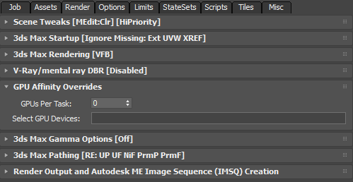GPUs Per Task value spinner
Controls the number of GPUs to be used by a Task.
Default is 0, meaning no limit.
Useful when running Concurrent Tasks on a machine with multiple GPUs available.
Select GPU Devices text field
Specifies the GPU Devices to use.
Default is empty string.
3ds Max Gamma Options rollout¶
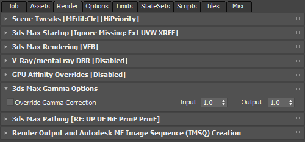Gamma Correction checkbox
When checked, the Input and Output Gamma correction values of 3ds Max will be forces to the ones specified in this rollout.
Input value spinner
Defines the Input Gamma to enforce when the Gamma Correction control is checked.
Default is 1.0.
Output value spinner
Defines the Output Gamma to enforce when the Gamma Correction control is checked.
Default is 1.0.
3ds Max Pathing Options rollout¶
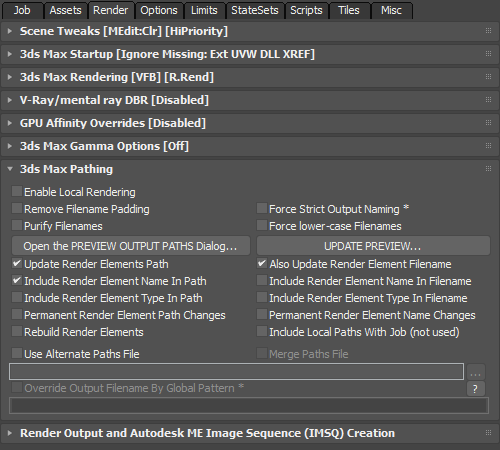Enable Local Rendering checkbox
If checked, Deadline will render the frames locally before copying them over to the final network location.
Remove Filename Padding checkbox
If checked, the output filename will be (for example) “output.tga” instead of “output0000.tga”.
This feature should only be used when rendering single frames.
If you render a range of frames with this option checked, each frame will overwrite the previous existing frame.
Force Strict Output Naming checkbox
If checked, the output image filename is automatically modified to include the scene’s name.
For example, if the scene name was myScene.max and the output image path was
\\myServer\images\output.tga, the output image path would be changed to\\myServer\images\myScene\myScene.tga.If the new output image path doesn’t exist, it is created by the 3dsmax plugin before rendering begins.
Purify Filenames checkbox
If checked, all render output including Render Elements will be purged of any illegal characters as defined by “PurifyCharacterCodes” in “SubmitMaxToDeadline_Defaults.ini” file.
Force lower-case Filenames checkbox
If checked, all render output including Render Elements will be forced to have a lowercase filename.
Open The PREVIEW OUTPUT PATHS Dialog… button
Pressing this button opens the a Preview floating dialog showing the output filenames that will be generated by the Job according to the current settings.
The Preview info is created by actually generating a temporary .JOB file and reading its content.
UPDATE PREVIEW… button
Pressing this button will update the Preview dialog if it is open.
It is useful if you changed any settings outside of the SMTD, for example in the Render Scene or in the Render Elements dialogs.
The same operation can also be performed by pressing the UPDATE! button inside the Preview dialog itself.
Note that changing any of the settings in SMTD’s Pathing dialog (e.g. Include Render Element Name In Path, Force lower-case Filenames etc.) will update the dialog automatically.
In the above screenshot, the Preview dialog was set to highlight in red paths longer than 150 characters (the default is 260 characters). The V-Ray VFB was disabled to allow the individual Render Elements to generate their own output. A single frame 0 was requested.
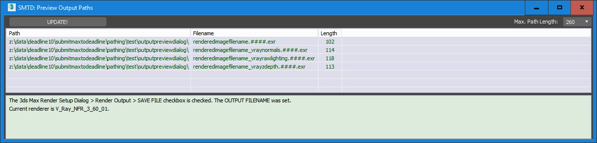In the above screenshot, the same paths have been set to force lower-case, and only include the Render Element name in the Filename part, but not in the Path. A frame range from 0 to 100 was requested, hence the #### token.
Update Render Elements’ Paths checkbox
Each Render Element has its own output path which is independent from the render output path.
When this option is unchecked, changing the output path will NOT update the Render Elements’ paths and the Elements could be written to the wrong path, possibly overwriting existing passes from a previous render.
When checked, the paths will be updated to point at sub-folders of the current Render Output path with names based on the name and class of the Render Element.
The actual file name will be left unchanged.
Also Update RE’s Filenames checkbox
If enabled, the Render Element file names will also be updated along with their paths.
Include RE Name in Paths checkbox
If enabled, the new Render Element files will be placed in a folder that contains the RE name.
Include RE Name in Filenames checkbox
If enabled, the new Render Element files will contains the RE name in the file name.
Include RE Type in Paths checkbox
If enabled, the new Render Element files will be placed in a folder that contains the RE type.
Include RE Type in Filenames checkbox
If enabled, the new Render Element files will contains the RE type in the file name.
Permanent RE Path Changes checkbox
When this checkbox is checked, changes to the Render Elements paths will be permanent (in other words after the submission, all paths will point at the new locations created for the job). When unchecked, the changes will be performed temporarily during the submission, but the old path names will be restored right after the submission.
Permanent RE Name Changes checkbox
When this checkbox is checked, changes to the Render Elements file names will be permanent (in other words after the submission, all file names will point at the new locations created for the job). When unchecked, the changes will be performed temporarily during the submission, but the old file names will be restored right after the submission.
Rebuild Render Elements checkbox
If checked, Render Elements will be automatically removed and rebuilt during submission to work around known 3dsMax issues: (1) RE manager in 3dsMax gets confused between the correct image file format to be used to write each of the RE image files, (2) A bug with the VrayExtraTex which resets its name after submission, so on a second submission the output is different for that element, and (3) RenderElementManager’s path handling can behave differently depending on the visible state of the RenderSceneDialog. Note, the RE file extension will be unified to match the main 3ds Max render scene output image file. If you wish to maintain a different image file format for individual RE’s, then ensure this option is disabled.
Include Local Paths With Job (not used) (Thinkbox internal use only) Currently not hooked up to any functionality.
Use Alternate Paths File checkbox
When checked, you can specify an alternate path file in the MXP format that the Workers can use to find external references that are not found on the primary map paths.
Merge Paths File checkbox
When checked, the Alternate Paths File will be merged with the existing search path definitions.
When unchecked (default), the Alternate Path File will replace the search path definitions.
Render Output Autodesk ME Image Sequence (IMSQ) Creation rollout¶
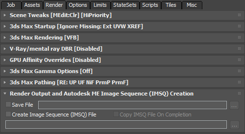Save File checkbox
Specify the render output.
Note that this updates the 3ds Max Render Output dialog, and is meant as a convenience to update the output file.
Create Image Sequence (IMSQ) File checkbox
If checked, an Autodesk IMSQ file will be created from the output files at the output location.
Copy IMSQ File On Completion checkbox
If checked, the IMSQ file will be copied to the location specified in the text field.
Options Tab¶
User Options rollout¶
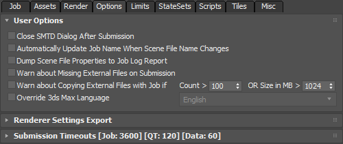Close SMTD Dialog After Submission checkbox
Automatically Update Job Name When Scene File Name Changes checkbox
If checked, the Job Name setting in the submission dialog will automatically match the file name of the scene loaded. So if you load a new scene, the Job Name will change accordingly.
Dump Scene File Properties to Job Log Report checkbox
When checked, [customize.ms] will dump the current 3dsMax scene file’s properties to the job log report (for debugging purposes only).
Warn about Missing External Files on Submission checkbox
When checked, a warning will be issued if the scene being submitted contains any missing external files (bitmaps etc.).
Depending on the state of the ‘Ignore Missing External File Errors checkbox under the Render tab, such files might not cause the job to fail but could cause the result to look wrong.
When unchecked, scenes with missing external files will be submitted without any warnings.
Warn about Copying External Files with Job only if checkbox and value spinners.
When checked, a waning will be issued if the external files count is greater than the specified number, or the size is greater than the specified value.
Both values can be configured to a studio’s need.
This option allows the user to cancel the submission and make changes to the scene if the numbers appear excessive and would result in a very long submission process.
Override 3ds Max Language checkbox and drop-down list
If enabled, you can choose a language to force during rendering.
Export Renderer-Specific Advanced Settings rollout¶
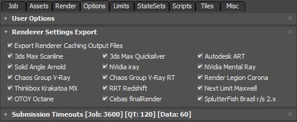Export Renderer Caching Output Files checkbox
If checked, any renderer specific caching output files which will be generated as part of this render job will be added as Deadline Monitor output paths which can be accessed via the right-click view output menu of the job.
Mental Ray, Corona and VRay caching files are currently supported.
Note, any caching file which is ONLY being ‘read’ by the renderer will NOT be included at submission time as it is NOT creating any output here but rather being referenced by the 3ds Max scene file.
Renderer Specific Setting checkbox
If an export option is enabled for a specific renderer, you will be able to modify a variety of settings for that renderer after submission from the Monitor.
To modify these settings from the Monitor, right-click on the job and select Modify Properties, then select the 3dsmax tab.
Submission Timeouts rollout¶
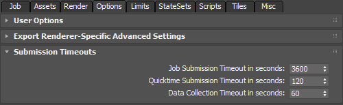Job Submission Timeout in seconds value spinner
This value spinner defines how many seconds to wait for the external Submitter application to return from the Job submission before stopping the attempt with a timeout message.
Data Collection Timeout in seconds
This value spinner defines how many seconds to wait for the external Submitter application to return from data collecting before stopping the attempt with a timeout message.
Data collecting includes collecting Pools, Categories, Limit Groups, Worker Lists, Worker Info, Jobs etc.
Limits Tab¶
Deny list/Allow list Workers rollout¶
Set the allow list or deny list for the job. See the Scheduling section of the Modifying Job Properties documentation for more information on the available options.
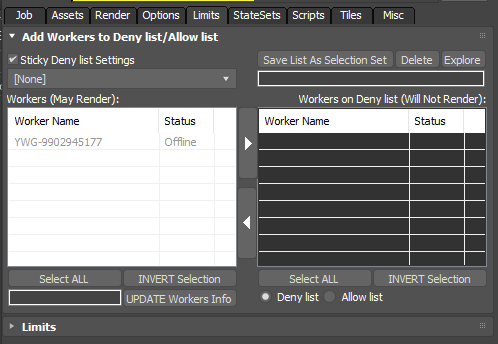Limits

Set the Limits that the job requires. See the Scheduling section of the Modifying Job Properties documentation for more information on the available options.
StateSets Tab¶
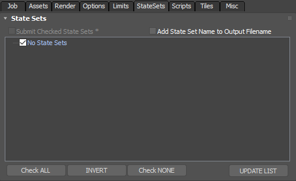Note: This option is available in 3ds Max 2012 (Subscription Advantage Pack 1) and later.
Submit Checked State Sets checkbox
When checked, each state set that has a checkmark in front of it on the list will be submitted as a separate Job.
Add State Set Name to Output Filename checkbox
When checked, the name of the state set will be added to the output filename to avoid collisions between state sets writing to the same file.
If the output filename was manually defined in each state set to avoid collisions, this option can be turned off.
Scripts Tab¶
Run Python Scripts rollout¶
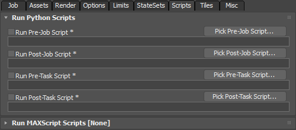Run Pre-Job Script checkbox, text field and button
When checked, the specified Python script will be executed when the job initially starts rendering.
Click the Pick Pre-Job Script button to pick a Python script from disk.
Run Post-Job Script checkbox, text field and button
When checked, the specified Python script will be executed when the job finishes rendering.
Click the Pick Post-Job Script button to pick a Python script from disk.
Run Pre-Task Script checkbox, text field and button
When checked, the specified Python script will be executed before each task starts rendering.
Click the Pick Pre-Task Script button to pick a Python script from disk.
Run Post-Task Script checkbox, text field and button
When checked, the specified Python script will be executed after each task finishes rendering.
Click the Pick Post-Task Script button to pick a Python script from disk.
Run Maxscript Script rollout¶
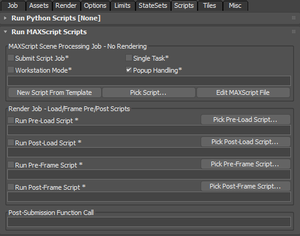Submit Script Job checkbox
This checkbox lets you turn the submission into a MAXScript job.
When checked, the scene will NOT be rendered, instead the specified MAXScript code will be executed for the specified frames. Options that collide with the submission of a MAXScript Job like “Tile Rendering” and “Render Preview Job First” will be disabled or ignored.
Single Task checkbox
This checkbox lets you run the MAXScript Job on one Worker only.
When checked, the job will be submitted with a single task specified for frame 1.
This is useful when the script itself will perform some operations on ALL frames in the scene, or when per-frame operations are not needed at all. When unchecked, the frame range specified in the Render Scene Dialog of 3ds Max will be used to create the corresponding number of Tasks.
In this case, all related controls in the Job tab will also be taken into account.
Workstation Mode checkbox
This checkbox is a duplicate of the one under the Job Options tab (checking one will affect the other).
MAXScript Jobs that require file I/O (loading and saving of 3ds Max files) or commands that require the 3ds Max UI to be present, such as manipulating the modifier stack, HAVE TO be run in Workstation mode (using up a 3ds Max license on the Worker). MAXScript Jobs that do not require file I/O or 3ds Max UI functionality can be run in Worker mode on any number of machines without using up 3ds Max licenses.
Popup Handling checkbox
When checked, pop-up dialogs will be handled automatically according to the popup handling rules.
When unchecked, no pop-up handling will be performed.
New Script From Template button
This button creates a new MAXScript without any execution code, but with all the necessary template code to run a MAXScript Job on Deadline.
The new script will open in the 3ds Max MAXScript Editor for further editing.
Pick Script… button
This button lets you select an existing script from disk to use for the MAXScript Job.
It is advisable to use scripts created from the Template file using the “New Script From Template” button.
Edit MAXScript File button
This button lets you open the current script file (if any) for editing in the 3ds Max MAXScript Editor.
Run Pre-Load Script checkbox, text field and button
This checkbox lets you run a MAXScript specified in the text field below it BEFORE the 3ds Max scene is loaded for rendering by the Worker.
Run Post-Load Script checkbox, text field and button
This checkbox lets you run a MAXScript specified in the text field below it AFTER the 3ds Max scene is loaded for rendering by the Worker.
Run Pre-Frame Script checkbox, text field and button
This checkbox lets you run a MAXScript specified in the text field below it BEFORE the Worker renders a frame.
Run Post-Frame Script checkbox, text field and button
This checkbox lets you run a MAXScript specified in the text field below it AFTER the Worker renders a frame.
Post-Submission Function Call text field
This field can be used by TDs to enter an arbitrary user-defined MAXScript Expression (NOT a path to a script!) which will be executed after the submission has finished.
This can be used to trigger the execution of user-defined functions or to press a button in a 3rd party script.
In the screenshot, the expression presses a button in a globally defined rollout which is part of an in-house scene management script.
If you want to execute a multi-line script after each submission, you could enter fileIn
c:\temp\somescript.msin this field and the content of the specified file will be evaluated.The content of this field is sticky and saved in the local INI file - it will persist between sessions until replaced or removed manually.
The MAXScript Job Template file is located in the Repository under \submission\3dsmax\Main\MAXScriptJobTemplate.ms. When the New Script From Template button is pressed, a copy of the template file with a name pattern “MAXScriptJob_TheSceneName_XXXX.ms” will
be created in the \3dsmax#\scripts\SubmitMaxToDeadline folder where XXXX is a random ID and 3dsmax# is the name of the 3ds Max root folder. The script file will open in 3ds Max for editing. You can add the code to be executed
in the marked area and save to disk. The file name of the new template will be set as the current MAXScript Job file automatically. If a file name is already selected in the UI, you will be prompted about replacing it first. Your custom MAXScript file MUST be submitted with the 3dsMax job (so a snapshot of the code file is taken). Ensure, via SMTD, the Submission Option of SMTD is “orange” - “SAVE and Submit Current Scene File with the Job to the REPOSITORY” is selected or alternatively via pure MAXScript:
SMTDSettings.SubmitSceneMode = #reposave --> Force save and submit mode
local maxFileToSubmit = SMTDPaths.tempdir + maxFileName
SMTDFunctions.SaveMaxFileCopy maxFileToSubmit
Note, MAXScripts are required to return either false or true at the end of the script. As an absolute minimum your Pre-Load, Post-Load, Pre-Frame or Post-Frame MAXScript should look like this:
(
true --return true if the script has finished successfully, return false to report a failure.
)
Deadline exposes an interface to MAXScript, which allows you to gather information about the job being rendered. See the Maxscript Interface documentation for the available functions and properties.
Tiles / Jigsaw Tab¶
Tile & Region Rendering Options rollout¶
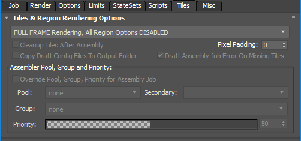Region Rendering Mode drop-down list
This drop-down list controls the various rendering modes:
FULL FRAME Rendering, All Region Options DISABLED - this is the default mode of the Submitter. No region rendering will be performed and the whole image will be rendered.
SINGLE FRAME, MULTI-REGION ‘Jigsaw’ Rendering - Single Job, Regions As Tasks - this mode allows one or more regions to be defined and rendered on one or more network machines. Each region can be optionally sub-divided to a grid of sub-regions to split between machines. The resulting fragments will then be combined to a new single image, or optionally composited over a previous version of the full image using DRAFT. This mode is recommended for large format single frame rendering. Note that the current frame specified by the 3ds Max TIME SLIDER will be rendered, regardless of the Render Dialog Time settings.
ANIMATION, MULTI-REGION ‘Jigsaw’ Rendering - One Job Per Region, Frames As Tasks - this mode allows one or more regions to be defined and rendered on one or more network machines. Each region can be optionally sub-divided to a grid of sub-regions to split between machines. Each region can be optionally animated over time by hand or by using the automatic tracking features. The resulting fragments from each frame will then be combined to a new single image, or optionally composited over a previous version of the full image using DRAFT. This mode is recommended for animated sequences where multiple small portions of the scene are changing relative to the previous render iteration.
SINGLE FRAME TILE Rendering - Single Job, Tiles As Tasks - this mode splits the final single image into multiple equally-sized regions (Tiles). Each Tile will be rendered by a different machine and the final image can be assembled using DRAFT. This mode is recommended when the whole image needs to be re-rendered, but you want to split it between multiple machines.
3DS MAX REGION Rendering - Single Job, Frames As Tasks - this mode allows for traditional 3ds Max REGION, BLOWUP and CROP render modes to be used via Deadline.
Cleanup Tiles After Assembly checkbox
When checked, the Tile image files will be removed after the final image has been assembled. Keep this unchecked if you intend to resubmit some of the tiles and expect them to re-assemble with the previous ones.
Pixel Padding value spinner.
Default is 4 pixels.
This is the number of pixels to be added on each side of the region or tile to ensure better stitching through some overlapping. Especially when rendering Global Illumination, it might be necessary to render tiles with significant overlapping to avoid artefacts.
Copy Config Files To Output Folder checkbox
When checked, the configuration files for Assembly jobs will be duplicated in the output folder(s) for archiving purposes.
The actual assembling will be performed using the copies stored in the Job Auxiliary Files folder.
Use this option if you want to preserve a copy next to the assembled frames even after the Jobs have been deleted from the Deadline Repository.
Assembly Job Error On Missing Tiles checkbox
When unchecked, missing region or tile fragments will not cause errors and will simply be ignored, leaving either black background or the previous image’s pixels in the assembled image. When checked, the Assembly will only succeed if all requested input images have been found and actually put together.
Override Pool, Group, Priority for Assembly Job checkbox
When enabled, the Assembly Pool, Secondary Pool, Group and Priority settings will be used for the Assembly Job instead of the main job’s settings.
The output formats that are supported by the Draft Tile Assembler jobs are BMP, DDS, EXR, JPG, JPE, JPEG, PNG, RGB, RGBA, SGI, TGA, TIF, and TIFF.
Jigsaw [Single-Frame | Animation] Multi-Region Rendering rollout¶
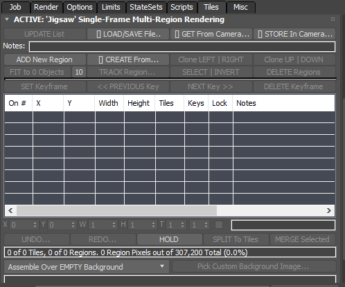This rollout contains all controls related to defining, managing and animating multiple regions for the’Jigsaw’ modes. The rollout title will change to include an ACTIVE: prefix and the “Single-Frame” or “Animation” token when the respective mode is selected in the Region Rendering Mode drop-down list (see above).
UPDATE List button
Press this button to refresh the ListView.
LOAD/SAVE File… button
Click to open a menu with the following options:
LOAD Regions From Disk Preset File…: Selecting this option will open a file open dialog and let you select a previously saved Regions Preset. Any existing regions will be replaced by the ones from the file.
MERGE Regions From Disk Preset File…: Selecting this option will open a file open dialog and let you select a previously saved Regions Preset. Any existing regions will be preserved, and the file regions will be appended to the end of the list.
SAVE Regions To Disk Preset File…: Only enabled if there are valid regions on the list. When selected, a file save dialog will open and let you save the current regions list to a disk preset for later loading or merging in the same or different projects.
GET From Camera… button
If the current view is a Camera, a list of region definitions stored in the current view’s Camera will be displayed, allowing you to replace the current region list with the stored one.
If the current view is not a Camera view, a warning message will be shown asking you to select a Camera view.
If the current view’s Camera does not have any regions stored in it, nothing will happen.
STORE In Camera… button
If the current view is a Camera, a list of region definitions stored in the current view’s Camera will be displayed, with the added option to Save New Preset… in a new “slot”. Alternatively, you can select any of the previously stored “slots” to override or update.
The Notes text specified in the Notes: field below will be used to describe the preset.
Also, additional information including the number of regions, the user, machine name, date and time and the MAX scene name will be stored with the preset.
Notes text field
Enter a description of the current Region set to be used when saving a Preset to disk or camera.
When a preset is loaded, the field will display the notes stored with the preset.
ADD New Region button
Creates a new region and appends it to the list.
If objects are selected in the scene, the region will be automatically resized to frame the selection.
If nothing is selected, the Region will be set to the full image size.
CREATE From… button
Click to open a context menu with several multi-region creation options:
Create from SCENE SELECTION…: Select one or more objects in the scene and pick this option to create one region for each object in the selection. Note that regions might overlap or be completely redundant depending on the size and location of the selected objects - use the OPTIMIZE options below to reduce.
Create from TILES GRID…: Pick this option to create one region for each tile specified in the Tiles rollout. For example, if the Tiles in X is set to 4 and Tiles in Y is 3, 12 regions resembling the Tile Grid will be created. Note that once the regions are created, some of them can be merged together, others can be subdivided or split as needed to distribute regions with different content and size to different machines, providing more flexibility than the original Tiles mode.
Create from 3DS MAX REGION…: Create a region with the size specified by the 3ds Max Region gizmo.
OPTIMAL FILL Of Empty Areas: After the grid is created, two passes are performed: first a Horizontal Fill where regions are merged horizontally to produce wider regions, then a Vertical Fill merging regions with shared horizontal edges. The result is the least amount of tiles and equivalent to manually merging any neighbor tiles with shared edges in Maya Jigsaw. Thus, it is the top (recommended) option.
HORIZONTAL FILL Of Empty Areas: After creating the grid, a pass is performed over all regions to find neighbors sharing vertical edges. When two regions share an edge and the same top and bottom corner, they get merged. This is the equivalent to the Maya Jigsaw behavior, producing wider regions where possible, but leaving a lot of horizontal edges between tiles with the same width.
VERTICAL FILL Of Empty Areas: After creating the grid, a pass is performed to merge neighboring regions sharing a horizontal edge with the same left/right corners. The result is the opposite of the Horizontal Fill - a lot of tall regions.
GRID FILL Of Empty Areas: Takes the horizontal and vertical coordinates of all tiles and creates a grid that contains them all. No merging of regions will be performed.
OPTIMIZE Regions, Overlap Threshold > 25%: Compare the overlapping of all highlighted regions and if the overlapping area is more than 25% of the size of the smaller one of the two, combine the two regions to a single region. Repeat for all regions until no overlapping can be detected.
OPTIMIZE Regions, Overlap Threshold > 50%: Same as the previous option, but with a larger overlap threshold.
OPTIMIZE Regions, Overlap Threshold > 75%: Same as the previous options, but with an even larger overlap threshold.
Clone LEFT|RIGHT button
Select a single region in the list and click with the Left Mouse Button to clone the region to the left, or Right Mouse Button to clone to the right.
The height will be retained.
The width will be clamped automatically if the new copy is partially outside the screen.
Clone UP|DOWN button
Select a single region in the list and click with the Left Mouse Button to clone the region up, or Right Mouse Button to clone down.
The width will be retained.
The height will be clamped automatically if the new copy is partially outside the screen.
FIT to N Objects / Fit Padding Value button
Highlight exactly one region in the list and select one or more objects in the scene, then click with the Left Mouse Button to perform a precise vertex-based Fit to the selection, or click with the Right Mouse Button to perform a quick bounding-box based Fit to the selection.
Click the small button with the number to the right to select the Padding Percentage to use when fitting in either modes.
TRACK Region… button
Left-click to open the Track dialog in Vertex-based mode for the currently selected region and scene objects.
Right-click for Bounding Box-based mode.
While you can switch the mode in the dialog itself, both the radio buttons and the Padding % values will be adjusted for faster access according to the mouse button pressed.
SELECT | INVERT button
Left-click to highlight all regions on the list.
Right-click to invert the current selection.
DELETE Regions button
Click to delete the highlighted regions on the list.
SET Keyframe button
Highlight one or more regions and click this button to set a keyframe with the current region settings at the current time.
<< PREVIOUS Key button
Click to change the time slider to the previous key of the highlighted region(s), if case there are such keys.
NEXT Key >> button
Click to change the time slider to the next key of the highlighted region(s), if case there are such keys.
DELETE Keyframe button
Click to delete the keys (if any) of the highlighted regions.
If there is no key on the current frame, nothing will happen.
Use in conjunction with Previous/Next Key navigation to delete actually existing keys.
Regions ListView
The list view is the main display of the current region settings.
It provides several columns and a set of controls under each column for editing the values on the list:
On # column: Shows a checkbox to toggle a region on and off for rendering, and the index of the region.
X and Y columns: These two columns display the coordinates of the upper left corner of the Region. Note that internally the values are stored in relative screen coordinates, but in the list they are shown in current output resolution pixel coordinates for convenience. Changing the output resolution in the Render Setup dialog and pressing the UPDATE List button will recalculate the pixel coordinates accordingly.
Width and Height columns: These two columns display the width and height of the region in pixels. Like the upper left corner’s X and Y coordinates, they are stored internally as relative screen coordinates and are shown as pixels for convenience.
Tiles column: Each region can be subdivided additionally horizontally and vertically into a grid of sub-tiles, each to be rendered by a different network machine. This column shows the number of tiles of the region, default is 1x1.
Keys column: This column shows the number of animation keys recorded for the region. By default regions have no animation keys and will show – in the column unless animated manually or via the Tracking option.
Locked column: After Tracking, the region will be locked automatically to avoid accidental changes to its position and size. You can also lock the region manually if you want to prevent it from being moved accidentally.
Notes column: This column displays auto-generated or user-defined notes for each region. When a region is created, it might be given a name based on the object it was fitted to, the original region it was cloned or split from etc. You can enter descriptive notes to explain what every region was meant for.
UNDO… / REDO… buttons
Most operations performed in the Multi-Region rollout will create undo records automatically.
The Undo buffer is saved to disk in a similar form as the presets, and you can undo or redo individual steps by left-clicking the button, or multiple steps at once by right-clicking and selecting from a list.
HOLD buttons
Not all operations produce a valid undo record.
If you feel that the next operation might be dangerous, you can press the HOLD button to force the creation of an Undo record at the current point to ensure you can return back to it in case the following operations don’t produce desirable results.
SPLIT To Tiles button
Pressing this button will split the highlighted region to new regions according to the Tiles settings, assuming they are higher than 1x1 subdivisions.
You can use this feature together with the Tiles controls to quickly produce a grid of independent regions from a single large region.
For example, if you create a single region with no scene selection, it will have the size of the full screen.
Enter Tile values like 4 and 3 and hit the SPLIT To Tiles to produce a grid of 12 regions.
MERGE Selected button
Highlight two or more regions and press this button to merge them into a single region.
The regions don’t have to necessarily touch or overlap - the minimum and maximum extents of all regions will be found and they will be replaced by a single region with that position and size.
Summary Field
This field displays information about the number of regions and sub-regions (tiles), the number of pixels to be rendered by these regions, and the percentage of pixels that would be rendered compared to the full image.
Assemble Over… drop-down list
This list provides the assembly compositing options:
Assemble Over EMPTY Background: The regions will be assembled into a new image using a black empty background with zero alpha.
Compose Over PREVIOUS OUTPUT Image: The regions will be assembled over the previously rendered (or assembled) image matching the current output filename (if it exists). If such an image does not exist, the regions will be assembled over an empty background.
Compose Over CUSTOM SINGLE Image: The regions will be assembled over a user-defined bitmap specified with the controls below. The same image will be used on all frames if an animation is rendered.
Compose Over CUSTOM Image SEQUENCE: The regions will be assembled over a user-defined image sequence specified with the controls below. Each frame will use the corresponding frame from the image sequence.
Pick Custom Background Image button
Press this button to select the custom image or image sequence to be used in the last compositing modes above.
Make sure you specify a network location that can be accessed by the Draft jobs on Deadline performing the Assembly!
[Single-Frame | Animation] Tile Rendering rollout¶

Tiles In X / Tiles In Y value spinners
These values specify the number of tiles horizontally and vertically.
The total number of tiles (and jobs) to be rendered is calculated as X*Y and is displayed in the UI.
Show Tiles In Viewport checkbox
Enables the tile display gizmo.
Re-Render User-Defined Tiles
When checked, only user-defined tiles will be submitted for re-rendering.
Use the [Specify Tiles To Re-render…] check-button to open a dialog and select the tiles to be rendered.
Specify Tiles To Re-render
When checked, a dialog to select the tiles to be re-rendered will open.
To close the dialog, either uncheck the button or press the [X] button on the dialog’s title bar.
Enable Blowup Mode
If enabled, tile rendering will work by zooming in on the region and rendering it at a smaller resolution.
Then that region is blown up to bring it to the correct resolution.
This has been known to help save memory when rendering large high resolution images.
Submit All Tiles As A Single Job
By default, a separate job is submitted for each tile (this allows for tile rendering of a sequence of frames).
For easier management of single frame tile rendering, you can choose to submit all the tiles as a single job.
Submit Dependent Assembly Job
When rendering a single tile job, you can also submit a dependent assembly job to assemble the image when the main tile job completes.
3ds Max Region Rendering rollout¶
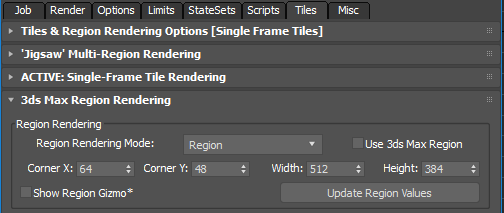When enabled, only the specified region will be rendered and depending on the region type selected, it can be cropped or blown up as well. If the Enable Distributed Tiles Rendering checkbox is checked, it will be unchecked. This option REPLACES the “Crop” option in the Render mode drop-down list in the 3ds Max UI. In other words, the 3ds Max option does not have to be selected for Region Rendering to be performed on Deadline. The region can be specified either using the CornerX, CornerY, Width and Height spinners, or by getting the current region from the active viewport. To do so, set the Render mode drop-down list to either Region or Crop, press the Render icon and drag the region marker to specify the desired size. Then press ESC to cancel and press the Get Region From Active View to capture the new values.
Misc Tab¶
Batch Submission rollout¶
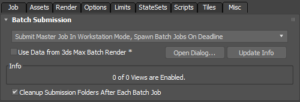WARNING: Batch Render can optionally work with the old “Scene State” system in 3dsMax but does NOT work in partnership with the newer “State Sets” system, which was introduced into 3dsMax after Batch Render. SMTD provides a separate interface if you wish to submit “State Sets” to Deadline.
Submit All Batch Jobs From The Local Workstation: All enabled Batch Render views will be submitted by your local workstation to the Deadline queue as normal 3dsmax plugin based render jobs. This may take some submission time, depending on the number of Batch Views to submit and if you currently have a large 3dsMax scene file, which you are also including with each job submission. (Alternatively; referencing the 3dsmax scene file from a network location will speed up job submission for you here). See scene file Submission Options for more details.
Submit Master Job In Workstation Mode, Spawn Batch Jobs On Deadline: A single MASTER job will be sent to Deadline which in turn will “spawn” all necessary BATCH jobs. This requires the Deadline Worker that picks up this job to run in Workstation Mode (requires 3dsMax GUI license) and a maxscript will execute spawning all the enabled Batch Render views as separate jobs back into the Deadline queue.
Use Data from 3ds Max Batch Render: This checkbox enables Batch Submission using the 3ds Max Batch Render dialog settings.
Open Dialog: This button opens the 3ds Max Batch Render dialog in Version 8 and higher.
Update Info: This button reads the 3ds Max Batch Render dialog settings and displays the number of enabled vs. defined Views. Ensure the number of enabled views correlates with your expected number of Batch views prior to job submission.
Cleanup Submission Folders After Each Batch Job: SMTD will purge any temporary local files created during the Batch Render job submission to Deadline. This ensures efficient use of disk space on your local machine.
Extra Info
These are some extra arbitrary properties that can be set for the job. Note that some of these are reserved when enabling the Shotgun, FTrack or Draft settings.
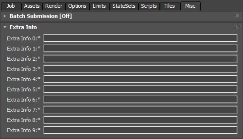